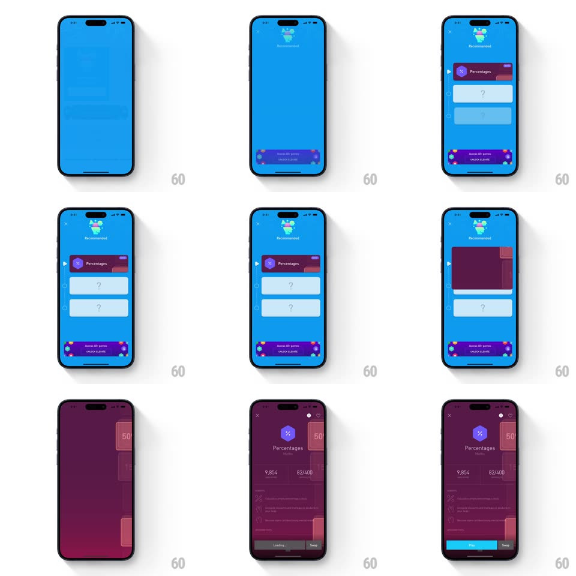

Media
Frame-by-frame

Rebuild this interaction 1:1: Elevate's workout detail morph - tapping a Today card floods the screen with the card's blue, the recommendation icon and "Percentages" title settle top, answer slots and a promo banner stagger in, and Play/Swap buttons anchor the bottom.

Rebuild this interaction 1:1: Elevate's workout detail morph - tapping a Today card floods the screen with the card's blue, the recommendation icon and "Percentages" title settle top, answer slots and a promo banner stagger in, and Play/Swap buttons anchor the bottom.
## Integration
Integration: stack-agnostic spec - springs given as stiffness/damping, timed motions as duration + curve; map every value to your framework and animation library of choice.
## Scene
Today feed with workout cards; the detail screen: full blue field, close X top-left, a small "Recommended" icon header, the workout card (purple "Percentages" tile with score/progress), two pale "?" slots, a dark promo banner ("Access 35+ games UNLOCK ELEVATE"), and bottom Play / Swap buttons.
## Motion spec
Pattern: color-flood card expansion.
- Tap: the card's blue floods outward from the card bounds to fill the screen (400ms, ease-out, the color leading, content following).
- The header icon and "Recommended" label fade in at top (250ms, 100ms late).
- The Percentages tile slides down from the top edge into place (spring ~320/22) while the two "?" slots scale up staggered (0.9 -> 1, 250ms each, 100ms apart).
- The promo banner rises from the bottom (300ms), then Play and Swap slide up last, splitting left/right.
- Reverse on close: everything collapses back into the card's bounds, the feed reappearing under the receding blue.
## Calibration
- The flood is one continuous color surface - the card's corner radius expands to zero as it fills.
- Detail content keeps generous center spacing; the screen breathes despite the saturated field.
## Reduced motion
Crossfade to the composed detail screen.
## Don't miss
- The blue is sampled from the card itself - different workouts flood different colors.
- Play is bright cyan and dominant; Swap is quiet - hierarchy survives the flood.